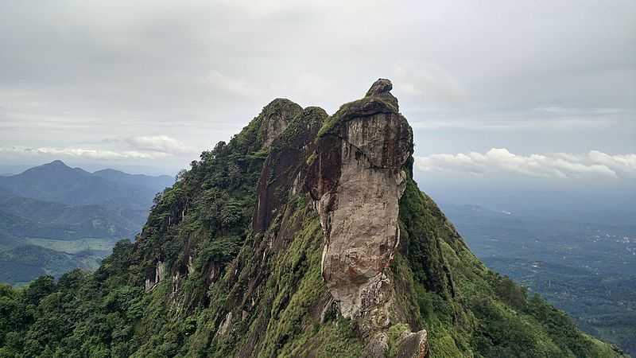

4.Pathanamthitta
Adavi ecotourism and Kottavanchi savari
Konni is an attractive town with lush pastures and hills on the banks of river Achakovil situated at a distance of 11 km from Pathanamthitta. It is surrounded by pepper and clove plantation. It is a famous timber trade and elephant training centre. Its vast area of lush green forests make it the eco-tourism hub of Pathanamthitta district and has projects like Ancient and present elephant shelters, photo gallery, etc., to provide different experiences to the visitors.
Adavi is a major tourist attraction in Konni situated on the banks of the Kallar river. The main attraction of Adavi is coracle (a small, round, lightweight traditional boat) riding and bamboo huts erected on the banks of the Kallar River.
5.Kottayam
Illikkal Kallu

Located at a height of 6000 ft above the sea level in the Western Ghats of Kottayam, Kerala, Illikkal Kallu is a major tourist attraction and one of the most pristine spots in all of India. Situated in Moonnilavu Village, Meenachil taluk, the nearest city to the summit is Teekoy. Besides several other factors which make this peak unique, the most prominent feature is that half the boulder of the majestic rock has fallen apart. The remaining half stands sturdy and presents an extremely exalted picture. Surrounded by colossal green hills, the offbeat destination boasts of immaculate environs, enchanting panoramic vistas and an all around utopian atmosphere.
6.Thrissur
Vadakummnathan temple

With a collection of beautiful Mural paintings, some of which are more than 400 years old, this gigantic 1000 year old temple and historical structure is famous for the Nataraja Mural near the main gate.
The structure till date, displays its original colors without much preservation. The shrine of Vadakkumnathan is also situated there, which is apparently covered completely under ghee for centuries, without any incidence of melting. The shrines of Mahavishnu and Shankaranarayan are also located in the temple. It features one of the largest Dance Hall, called Koothambalam which depict unique Keralan architecture. It hosts traditional performances called Nangyar Koothu. Just outside the temple complex are situated the Thiruvambadi Krishna Temple and Paramekkavu Devi Temple, which are considered to be the sister temples of Vadakummnathan. This Temple is strictly open to Hindus. Non-Hindus are not allowed inside, but they can stand outside and look at the photos from there.
7.Kozhikode
Beypore

Beypore is a cosy coastal town tucked away in the small but striking Kozhikode District. Located at the mouth of the energetic Chaliyar River, this town is covered in vibrant shades of green and surrounded by mystic shades of blue. When under the reign of Tipu Sultan, who was the ruler of Mysore, this town was named Sultan Pattanam.
In spite of being a small town, it is very famous for ship-building. The shipbuilding yard here is renowned for the construction of Urus and Dhows, the traditional Arabian trading vessel. This craft is over 1500 years old now and is carried out carefully by the expert craftsmen who possess extraordinary skills.
In fact, the flagship of the British admiral, Lord Horatio Nelson who defeated Napoleon Bonaparte in the Battle of Trafalgar in the year 1805 was made in Beypore along with numerous other vessels of his celebrated fleet. Also, the sturdy wooden barges sailed across the Suez Canal during the reign of Cleopatra are also said to have been made at Beypore. What is mind-boggling is that no matter how big or complicated the ship to be built is, no formal plan or design or sketches is ever made All these computations are always in mind and at the fingertips of the foreman.